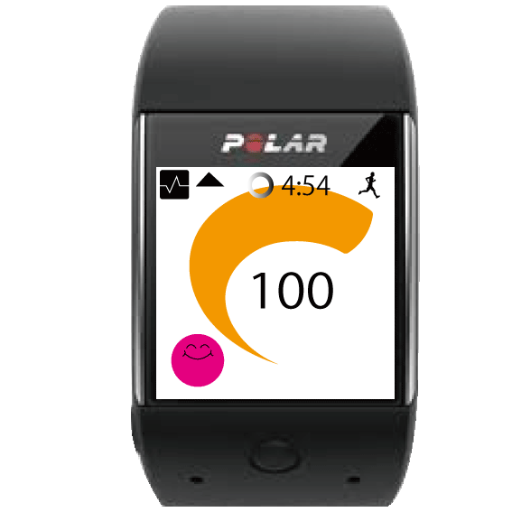
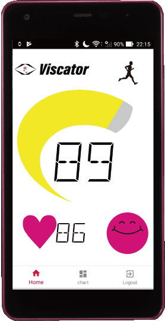

Visualize Sence Indicator
 生活習慣病を予防し、健康寿命の増進に励む人が増えている。
また、健康管理のために自身のバイタルをモニタリングする人が増えている。
現代のフィットネスアプリは自分で目標を設定できるため効率的でない。
また、過度な運動を予防する、自身のコンディションを手軽に把握する機能がない。
運動許容度とストレスフェイスの可視化により以上の問題点を解決した新しいフィットネスアプリの開発
2018/6/1~2018/12/6
生活習慣病を予防する30~40代の男女
1.医療知識の導入
2.サービスモデルの考案
3.開発言語の勉強
4.実装
5.実験
6.最終発表
サービスモデルの考案、デザイン担当(アプリ内の素材、ポスター、ロゴ)
疲労度を定義すること、運動許容度の導出、ゲージの作成